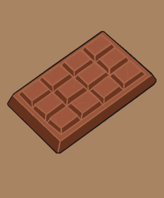

З чого починається шоколад
Шоколад — це продукт, що дарує радість мільйонам людей у всьому світі. Але чи замислювалися ви коли-небудь над тим, як саме виготовляється цей смачний десерт? Процес виробництва шоколаду — це складний ланцюг, який починається з маленького какао-боба і закінчується гладкою, солодкою плиткою, яка тане у роті. Давайте розглянемо ключові етапи виготовлення шоколаду.
1. Збирання какао-бобів
Виробництво шоколаду починається з какао-дерев, які ростуть в тропічних регіонах світу, зокрема в країнах Західної Африки, Південної Америки та Південно-Східної Азії. Ці дерева дають плоди, що містять какао-боби — основний інгредієнт для виготовлення шоколаду. Після того як плоди какао достигають, їх зривають вручну, розрізають, і виймають з них боби разом із м’якоттю. Цей сирий матеріал є основою для подальшого процесу виробництва шоколаду.
2. Ферментація
Після збору какао-боби проходять ферментацію — ключовий етап, що допомагає розвинути майбутній смак шоколаду. Боби вкладають у дерев’яні ящики або залишають під банановим листям на кілька днів. Під час ферментації вони починають виділяти природні цукри, що призводить до зміни смаку та кольору. Завдяки цьому процесу з'являються характерні шоколадні ноти.
3. Сушіння
Після ферментації какао-боби сушать на сонці протягом одного-двох тижнів, щоб позбавитися зайвої вологи. Це важливий етап, оскільки від нього залежить якість кінцевого продукту. Сухі боби пакують у мішки і транспортують до фабрик, де вони будуть перетворені на шоколад.
4. Обсмажування
На фабриці какао-боби обсмажують. Процес обсмажування відбувається при різних температурах залежно від типу шоколаду, що виготовляється. Обсмажування підсилює аромат бобів і допомагає розкрити їхній насичений смак.
5. Відокремлення какао-маси
Какао-масу поділяють на какао-порошок і какао-масло — дві важливі складові для виготовлення різних видів шоколаду. Какао-масло є жиром, що надає шоколаду його гладку текстуру, тоді як какао-порошок додається для смаку та кольору.
7. Коншування
Одним із найбільш тривалих і критичних етапів виготовлення шоколаду є коншування — процес тривалого змішування шоколадної маси для отримання ідеальної текстури та смаку. Під час цього етапу шоколад перемішується в спеціальних машинах-коншах, що допомагає видалити надлишок вологи та гіркоти. Це робить шоколад більш гладким і однорідним.
8. Темперування
Темперування — це процес охолодження та нагрівання шоколадної маси до точно визначених температур. Це дозволяє кристалам какао-масла стабілізуватися, що робить шоколад блискучим і дає йому хрустку текстуру при ламанні.
9. Формування та охолодження
Темперований шоколад розливають у форми для отримання плиток, цукерок або інших виробів. Після цього його охолоджують, щоб він затвердів і набув потрібної форми. Готові плитки шоколаду упаковують для продажу і відправляють у магазини по всьому світу.
